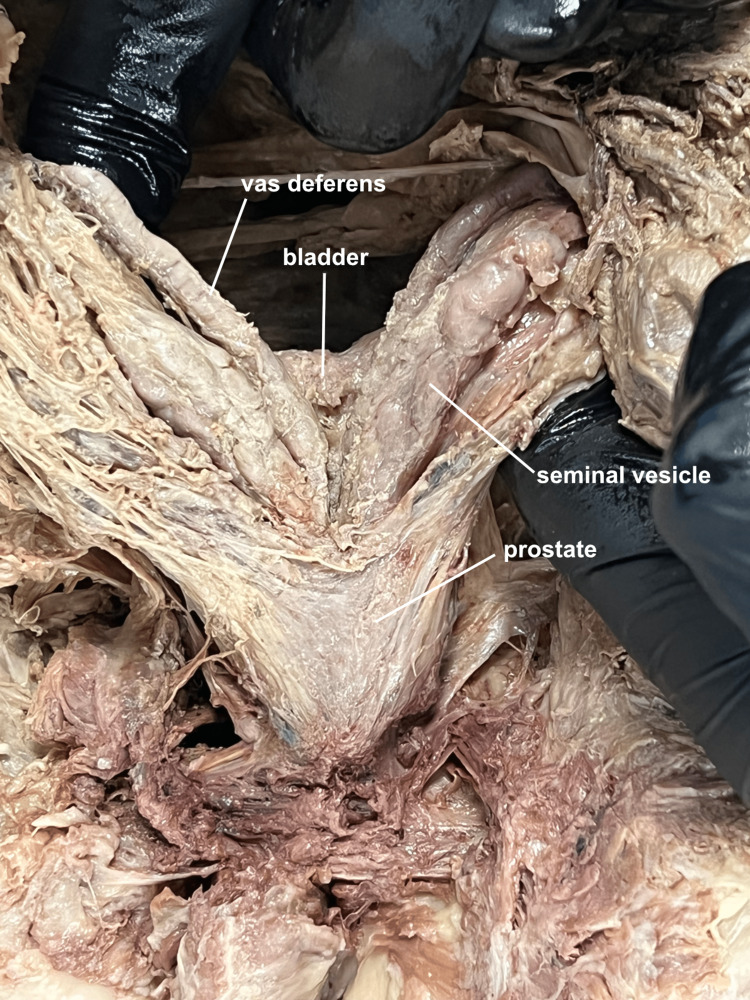

É a doença clássica do homem que envelhece — e a população envelhece. Por isso ela aparece no internato, no plantão de UPA às três da manhã e, mais cedo ou mais tarde, num familiar seu. Território que você vai pisar a vida inteira.
A próstata do idoso: onde ela está e por que importa
A doença que todo médico vai encontrar
A hiperplasia prostática benigna é, ao mesmo tempo, uma das doenças mais comuns do consultório e uma das mais cobradas em prova. Não é coincidência: ela é a doença clássica do homem que envelhece, e a população está envelhecendo. Quanto mais idosos, mais HPB. Por isso ela aparece em todo lugar — no internato, num plantão de UPA às três da manhã, e mais cedo ou mais tarde num familiar seu. Vale entrar nela sabendo que é território que você vai pisar a vida inteira.
Onde fica a próstata e qual o tamanho normal
A próstata é um órgão exclusivamente masculino — a mulher não tem próstata. Ela fica num lugar muito específico e muito estratégico: exatamente embaixo da bexiga. Essa posição é a chave de tudo o que vem depois, então fixe a imagem: bexiga em cima, próstata logo abaixo, encostada nela. O tamanho normal é o de uma noz — em peso, algo entre 20 e 30 gramas. Guarde esse número. Ele é a régua. Toda vez que aparecer "próstata de 60 g", "de 80 g", "de 300 g", você vai medir contra esses 20 a 30 gramas e entender na hora o tamanho do problema.
Toque numa estrutura para ver sua função.
A uretra prostática nasce aqui
E aqui está o detalhe que transforma um órgão pequeno num grande problema: por dentro da próstata passa o primeiro trecho da uretra, chamado justamente de uretra prostática. A urina, ao sair da bexiga, é obrigada a atravessar o miolo da próstata antes de seguir caminho. Um órgão que abraça o cano de saída da urina. Quando esse órgão cresce, ele aperta o cano. Toda a doença mora nessa relação de vizinhança.

Quiz — fixação
-
O peso normal de uma próstata adulta é de aproximadamente:
Gabarito: B. A próstata normal pesa 20 a 30 gramas — do tamanho de uma noz. Essa é a régua que organiza toda a HPB: é dela que se mede o crescimento. As outras três faixas não são "números aleatórios", são marcos de conduta que valem a pena fixar pelo contraste. A) 5 a 10 g é pequeno demais para próstata de adulto. C) 40 a 50 g já é a próstata aumentada que liga o inibidor de 5-alfa-redutase. D) 80 a 100 g é a próstata que muda a via cirúrgica — acima de 80 g já não cabe RTU, vai para cirurgia aberta.
Por que cair na C: 40–50 g parece "normal de homem mais velho", mas é exatamente o limiar do inibidor de 5-alfa-redutase — próstata já aumentada, não normal. Por que cair na D: 80–100 g é o corte cirúrgico (RTU × aberta); confundir esse valor com o normal apaga toda a régua de tamanho.
-
A próstata é atravessada pela primeira porção da uretra, chamada uretra prostática.
Verdadeiro. A próstata fica logo abaixo da bexiga e a primeira porção da uretra passa por dentro dela — a uretra prostática. Essa relação anatômica não é detalhe de prova: é a causa raiz de toda a HPB. Como a uretra atravessa a próstata, qualquer crescimento glandular estrangula o cano de saída da urina. Sem essa íntima vizinhança, a hiperplasia seria assintomática.
Por que marcar Falso engana: parece "anatomia decorativa", mas negar essa travessia derruba o entendimento da obstrução — é justamente porque a uretra passa dentro da próstata que a HPB obstrui.
-
A próstata fica localizada exatamente ______ da bexiga.
Gabarito: A. A próstata fica logo embaixo da bexiga, no caminho de saída da urina — por isso obstrui o fluxo quando cresce. As outras posições quebram a lógica do escoamento. B) "acima" inverteria a drenagem: a urina desce da bexiga, não sobe. C) "ao lado" tiraria a próstata da rota da uretra, e ela não obstruiria nada. D) "dentro" da bexiga é cálculo ou tumor vesical, não próstata.
Por que cair na B ou C: quem não fixa que a próstata está no caminho de saída (abaixo, em série com a uretra) perde a explicação inteira do sintoma obstrutivo. Por que cair na D: algo "dentro da bexiga" é cálculo/tumor vesical — não confunda o órgão com o conteúdo dela.